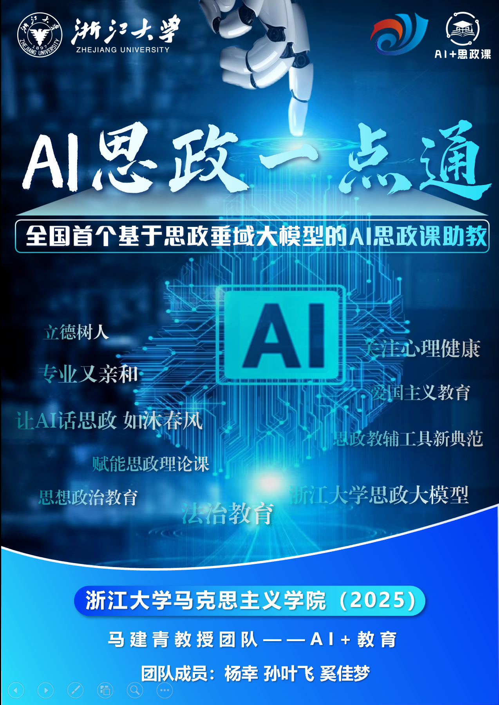

杨幸
浙江大学马克思主义学院 博士研究生
心理学本硕
思想政治教育专业博士在读
博导：马建青（二级教授/博导）
国家万人计划教学名师 国务院政府特殊津贴专家
国家万人计划教学名师 国务院政府特殊津贴专家
杨
个人简介：
- • 全国首部《大学生心理健康教育教程》数字教材副主编｜强鹰2025机器人班入围者
- • "AI思政课一点通" "AI心理一点通" 项目 核心开发者
- • 浙江科技大学、厦门医学院等单位邀约讲授者｜贵州都匀市政府招商引资政策实践意向合作｜"陈行甲AI心理医生" 智能向善志愿网络“齐家AI”开发成员
专注于生成式人工智能在思想政治教育、心理健康、家庭育儿与教育技术融合领域的交叉应用，具备从大模型微调、RAG架构设计、智能体开发到Prompt工程的完整技术体系，兼具教学产品设计与实景落地经验。特别擅长教育场景需求建模、知识图谱组织与对话风格调优，主担任项目"教育场景落地"与"可视化AI产品设计"开发者、负责人。
📘
重大成果与职责担当
全国首部《大学生心理健康教育教程》数字教材副主编，独立承担AI交互系统、心理测评数据结构、小游戏开发、数字人生成与AIGC视频正念引导等内容开发，是该教材智能化转型的关键实操者之一。该数字教材拟被列为全国高校教材数字化升级样板。
🔹 可提供证明材料：教材封面 + AI功能截图 + AIGC正念引导视频片段 + 教材2分钟展示视频
🔧
主导项目实践与平台化应用
🔹
《浙大·AI思政课一点通》
全国首个基于思想政治教育领域大模型的智能体型产品，已在浙江大学等十余所高校落地，2024.09公开上线并免费使用，累计用户量4500+人，使用量超38,000次。覆盖助学、助教、助研、助心四大场景，功能包含：一键备课、政策解读、课堂互动、作业智能评分、学生心理辅助等，入选浙江大学"AI for Education"重点项目、典型案例。
🔹 可提供证明材料：开发时间轴图、项目主海报、双二维码页（产品入口码、功能说明码）
🔹
《浙大·AI心理一点通》
面向心理健康领域构建的垂直大模型智能体，已在百度、浙大先生多平台部署，支持心理危机识别、共情对话风格调节、SFBT辅导流程模拟与咨询式AI交互，提供高可信度心理支持解决方案。具备完整知识库、记忆变量与对话多轮追踪能力。
🔹 可提供证明材料：产品使用二维码、主界面截图、心理危机调度流程图
🔹
《陈行甲AI心理医生》
担任核心技术协作者，参与语料质量评价、提示词策略设计、专家知识萃取与多轮风格微调。项目由中电西湖区智能向善网络与全国知名公益领袖陈行甲、赵翼（知名企业家）共同发起，致力于构建公益、免费、开源的家庭心理AI体系。
🔹 可提供证明材料：闭门攻坚合影（与赵翼）、志愿者网络组织担任队长截图、"认知盈余"理念宣传图
📊
发展历程与平台认可
2023年2月--2024年4月
完成全国首套AI+心理健康数字教材研发，发布全国首个LLM+RAG心理咨询问答机器人（助教）
2023年12月--2024年3月
主导"AI思政课一点通"入选浙江大学首批"AI for Education"教育改革重点项目（170 +申请 / 16 立项，其中重点 8 项）
2024年9月
完成3.0版系统部署，试用落地浙江大学、浙江万里学院、浙江科技大学、厦门医学院、新疆多所大学等
2025年2月
项目纳入"学在浙大"平台，对800+所高校免费开放
2025年3月
已完成全国学术会议发言/报告4场，高校专题授课13场，政府单位介绍1场，获多方媒体报道，含部级高校官推12篇（截至2025年4月）
🔹 可提供证明材料：发展历程图、媒体报道合集截图、会议讲座、项目介绍现场照片、课程邀约等
🔬
技术优势与团队背景
精通AIGC数字人生成、视频类教学素材创作与编辑，主持开发的AI数字人"乐乐"已应用于多所小学及中学AI教育启蒙课程精品成果展示，举办“AI+考古”个展，AIGC视频成果获浙大本科生院院长、原计算机学院院长、AI专家吴飞教授肯定
具备心理、政治、教育三重知识背景，熟悉CBT、SFBT等心理干预模型的Agent开发路径
团队由浙江大学马建青教授指导，长期参与心理健康课程、教材、AI交互系统一体化设计与测试
📎
相关证明材料一览（可选供）
| 模块 | 名称 | 相关文件 | ||||||||||||||||||||||||||||||||||||
|---|---|---|---|---|---|---|---|---|---|---|---|---|---|---|---|---|---|---|---|---|---|---|---|---|---|---|---|---|---|---|---|---|---|---|---|---|---|---|
| 教材展示 | 大学生心理健康教育教程介绍片.mp4 | 相关新闻：https://mp.weixin.qq.com/s/xUCfy6Q6l9oQAjh9yG-8AQ https://zjupsyebook.godaddysites.com/ | ||||||||||||||||||||||||||||||||||||
| 心理产品 | 浙大·AI心理一点通使用入口码.png | 二维码（可供内测，开发中，还未完全对外开放） | ||||||||||||||||||||||||||||||||||||
| 思政产品 | AI思政课一点通产品主海报.png | AI应用「思政课一点通」网页版：https://appbuilder.baidu.com/s/qgbCoWB5 | ||||||||||||||||||||||||||||||||||||
| 思政产品 | AI思政课功能展示说明二维码.png | 相关新闻：https://mp.weixin.qq.com/s/WNxxce2OUFOmBiDzEFxWGg | ||||||||||||||||||||||||||||||||||||
| 代表项目 | 陈行甲AI心理医生·技术攻坚闭门会合影.png | 相关新闻：https://mp.weixin.qq.com/s/b5IuYut652TlvLmTgL_VSA | ||||||||||||||||||||||||||||||||||||
| 媒体合集 | 讲座及项目媒体报道封面集.png | 补充案例举例：面向2025年3月都匀市政府招商工作组介绍“AI思政课一点通”开发及落地经验，受到积极评价，政府方有采购意向；担任多场AI科普、新质生产力宣讲；面向蒋村街道、余杭区、秦山核电站等政府及国央企开展专题党课、宣讲培训课及定制化培训课程授课；AI普及、AIGC内容创作培训讲师，擅长向教育机构与政府用户讲授AI原理与实操 | ||||||||||||||||||||||||||||||||||||
| 项目历程 | AI项目发展时间轴图.png | 入围强鹰2025机器人班 | 浙大党委副书记、机器人研究院院长朱世强导师组开展面试 https://mp.weixin.qq.com/s/fKz-DCkmW9Fb2xciHbwe_w |
| 模块 | 名称 | 相关文件 | 图片预览 |
|---|---|---|---|
| 思政产品 | AI思政课功能说明二维码 | 相关新闻：https://mp.weixin.qq.com/s/WNxxce2OUFOmBiDzEFxWGg |  |
| 项目历程 | 项目时间轴图 | 时间轴展示 |  |
| 代表项目 | 陈行甲AI心理医生项目合影 | 相关新闻：https://mp.weixin.qq.com/s/b5IuYut652TlvLmTgL_VSA |  |
| 媒体合集 | 讲座及项目媒体报道封面集 | 多场讲座与报道汇总 |  |
| 重要成果 | 强鹰2025机器人班入围证明 | 入围强鹰2025机器人班 | 浙大党委副书记、机器人研究院院长朱世强导师组开展面试 |  |
| 思政产品 | AI思政课一点通主海报 | AI应用「思政课一点通」网页版：https://appbuilder.baidu.com/s/qgbCoWB5 |  |
| 项目介绍 | AI思政课一点通招商介绍 | 面向政府与机构的项目介绍材料 |  |
| 心理产品 | AI心理一点通入口码 | 二维码（可供内测，开发中，还未完全对外开放） |